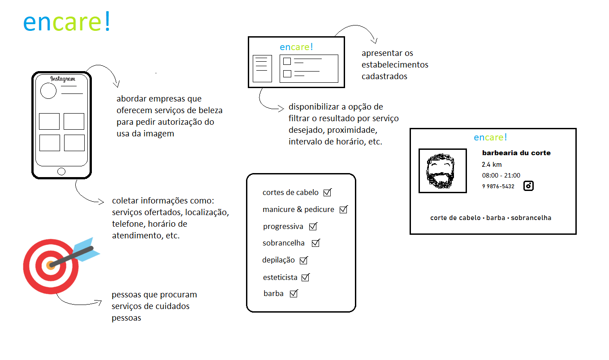

Rich Picture
Rich Picture é um artefato construído, muitas vezes de maneira informal, a fim de ilustrar e trazer uma melhor compreensão do problema a ser resolvido pela equipe.

Versionamento
| Data | Nome | Detalhe | Versão |
|---|---|---|---|
| 18/02/2020 | João Luis Baraky | Criando rich picture | 1.0 |
| 01/03/2020 | João Luis Baraky | Aumenta fonte e alinha a ideia com a equipe | 1.1 |